Yifu Yuan
I’m currently a Master’s student at Carnegie Mellon University, pursuing the
M.S. in Robotics Systems Development (MRSD)
under the Robotics Institute.
I obtained my bachelor’s degree, double majoring in Robotics Engineering and Computer Science at
Worcester Polytechnic Institute, where I worked closely with
Prof. Ali Yousefi and at the
ALMaS Group
led by Prof. Mahdi Agheli.
My recent research focuses on the humanoid whole-body loco-manipulation with Visual-Language-Action (VLA) model.
My ultimate goal is to propel the advancement of general-purpose humanoid robots, increasing its adaptability to dynamic settings to assist humans.
{kind=link}
Publications |
|
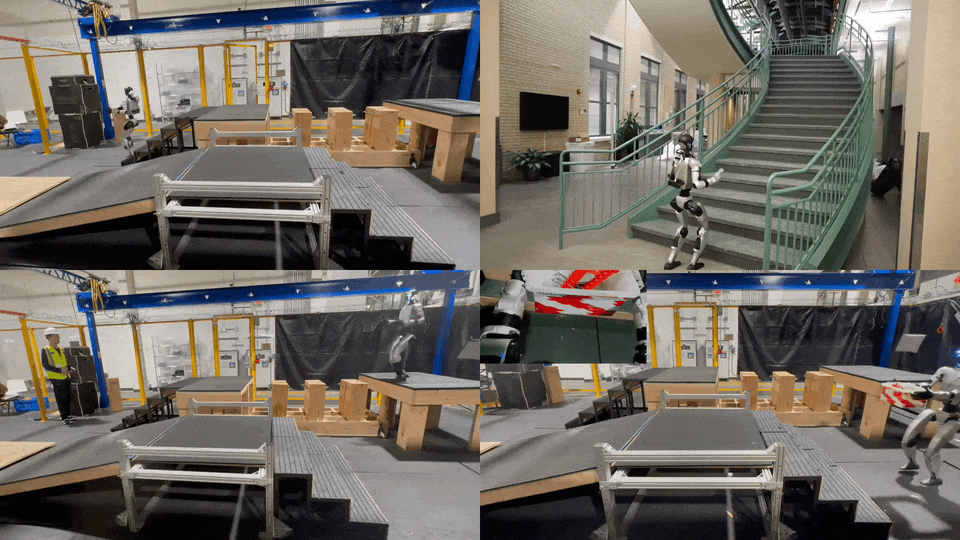 |
RPL: Learning Robust Humanoid Perceptive Locomotion over Challenging Terrains
Yuanhang Zhang, Younggyo Seo, Juyue Chen,Yifu Yuan, Koushil Sreenath, Pieter Abbeel, Carmelo Sferrazza, Karen Liu, Rocky Duan, Guanya Shi In submission webpage / paper TL;DR: RPL enables robust humanoid perceptive locomotion through a unified multi-depth policy that handles challenging terrains (slopes, stairs, stepping stones), multi-directional movements, payloads. |
|
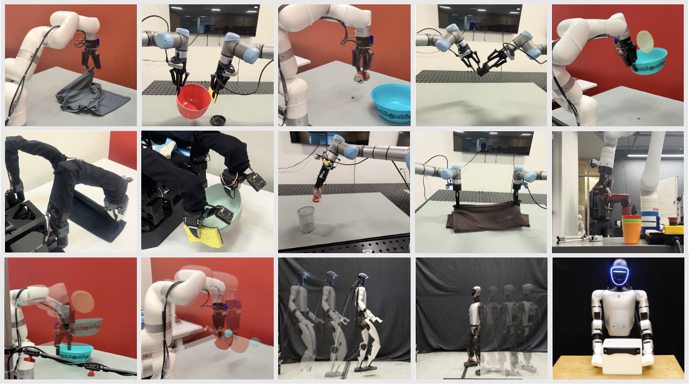 |
RIO: Flexible Real-time Robot I/O for Cross-Embodiment Robot Learning
Pablo Agustin Ortega-Kral*, Eliot Xing*, Arthur Bucker, Vernon Luk, Junseo Kim, Owen Kwon, Angchen Xie, Nikhil Sobanbabu, Yifu Yuan, Megan Lee, Deepam Ameria, Bhaswanth Ayapilla, Jaycie Bussell, Guanya Shi, Jonathan Francis, Jean Oh RSS 2026 webpage TL;DR: An open-source Python library that provides a low-overhead, unified interface for cross embodimet robot control, teleoperation, data collection, and policy deployment. |
|
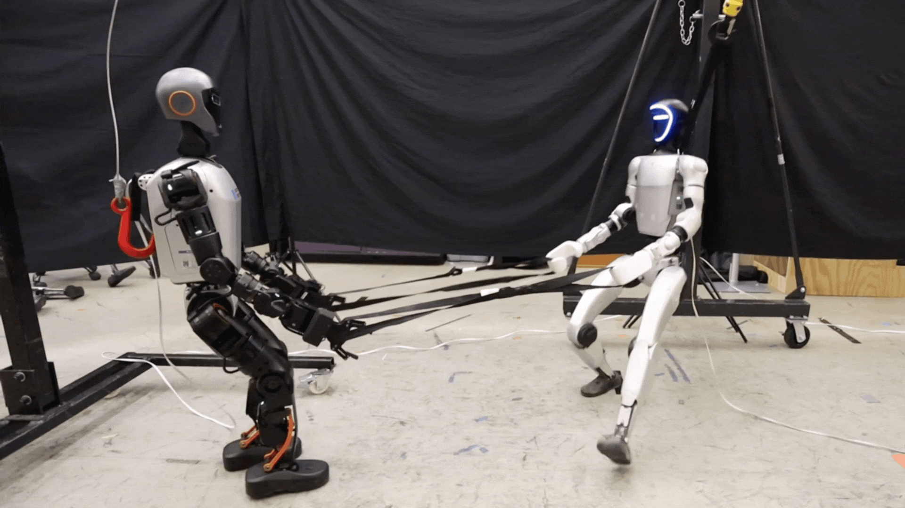 |
FALCON: Learning Force-Adaptive Humanoid Loco-Manipulation
Yuanhang Zhang, Yifu Yuan, Prajwal Gurunath, Tairan He, Shayegan Omidshafiei, Ali–akbar Agha–mohammadi, Marcell Vazquez-Chanlatte, Liam Pedersen, Guanya Shi L4DC 2026 (Oral) webpage / paper / code TL;DR: FALCON enables various heavy-duty humanoid loco-manipulation tasks via a new dual-agent force-adaptive RL framework. |
Projects & Research |

|
Humanoid Manipulation with Visual-Language-Action Model
CMU MRSD Capstone Project (Fall 2025) Sponsored by Nissan and Field AI Advised by Prof. Guanya Shi project website Fine-tuned and improved Nvidia GR00T N1.5 VLA model with asynchronous inference architecture and real-time teleoperation/data infrastructure for reliable deployment and scalable training. |

|
Autonomous Humanoid Loco-Manipulation for Tote Logistics
CMU MRSD Capstone Project (Spring 2025) Sponsored by Nissan and Field AI Advised by Prof. Guanya Shi project website Built an autonomy system that fuses 6D pose estimation (NVIDIA FoundationPose) with motion-capture localization for precise perception and navigation. Enabled the Unitree G1 to autonomously manipulate totes and operate effectively in real-world factory workflows. |
|
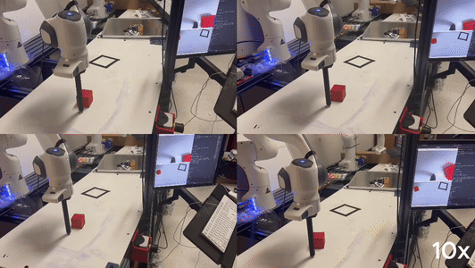 |
Block Pushing with Diffusion Policy
CMU Course Project, 2025 report Built and deployed Diffusion Policy leveraging RGB-D and state inputs for robust real-world block pushing on a Franka Panda robot. Enhanced training through human-in-the-loop demonstrations collected via a MoveIt model-based controller. |

|
Perceptive Locomotion with Precise Foot Placement for Quadruped Robot
WPI Major Qualification Project, 2024 Advised by Prof. Mahdi Agheli project website / video Developed perceptive locomotion on Unitree Go1 with a real-time mapping pipeline (RTAB-Map + robot-centric elevation mapping) on Jetson NX for 20 Hz terrain awareness. Combined it with NMPC (OCS2) and whole-body control to achieve reliable traversal on challenging, uneven surfaces. |

|
Humanoid Robot - Upper Torso
WPI Research Project, 2024 Advised by Prof. Mahdi Agheli project website Designed a compliant robot torso by 3D-printing TPU intervertebral discs that provide passive damping and safety. Built a parallel-manipulator actuation system delivering 3-DoF rotational motion with compact packaging and high rigidity under load. |
|
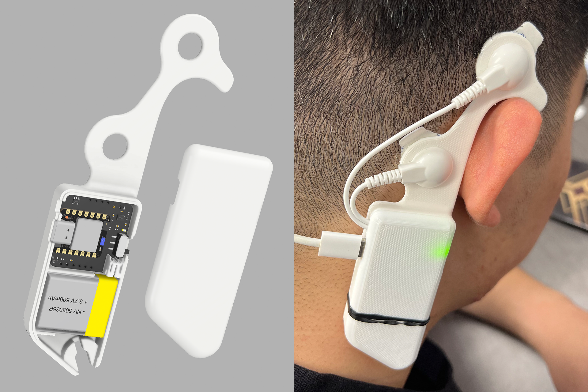 |
Portable EEG Device for Auditory Closed-Loop Stimulation Study
WPI Research Project, 2024 Advised by Prof. Ali Yousefi code Developed a portable single-channel EEG device with custom PCB design (BLE SoC) and 3D-printed enclosure, enabling audio closed-loop stimulation during sleep. The system was used to monitor overnight neural signals and collect high-quality datasets. These recordings supported the development and training of a sleep-stage classifier. |
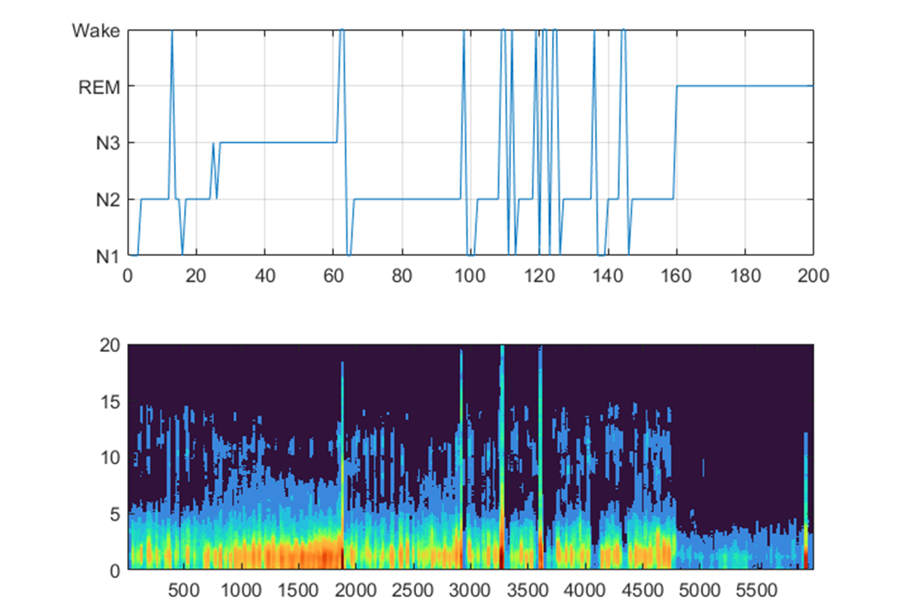 |
Deep Learning Model for Sleep Stage Scoring based on Raw Single-Channel EEG
WPI Research Project, 2024 Advised by Prof. Ali Yousefi code Proposed an efficient deep learning model and a novel technique to effectively extract time‐invariant features for sequence residual learning in down‐streaming modules based on raw single-channel EEG. |
|
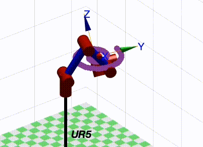 |
Dynamical Modeling of Serial Arm Robot
WPI Course Project, 2023 Programmed the ABB IRB 910 with MATLAB Robotics Toolbox to implement gravity compensation and torque-based control, improving pick-and-place precision by 25%. Developed dynamic models using Newton-Euler and Lagrangian formulations in MATLAB to enable accurate motion control and reduced trajectory errors. |
|
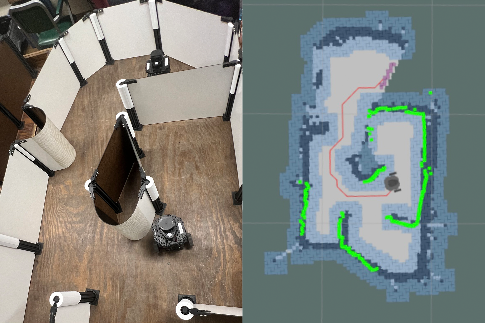 |
Autonomous Path Planning and Navigation Robot
WPI Course Project, 2023 Developed a TurtleBot platform capable of long-distance SLAM with 2 cm drift using G-mapping and AMCL in ROS. Added A* and RRT-based planners for optimal exploration and obstacle avoidance, and enhanced robustness with Kalman Filter re-localization after external disturbances. |

|
Vision Based 3‐DoF Manipulator
WPI Course Project, 2022 Video Implemented forward and inverse kinematics with cubic/quintic trajectories to control a 3-DoF robot manipulator for precision object sorting. Enhanced perception by integrating YOLOv5 and HSV thresholding in OpenCV, achieving >97% detection accuracy. Built a URDF and synchronized real-time CAD animation with the robot’s motion. |
|
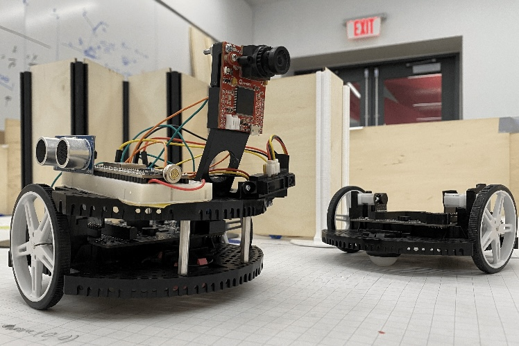 |
IR Based Mapping Robot
WPI Course Project, 2022 |
|
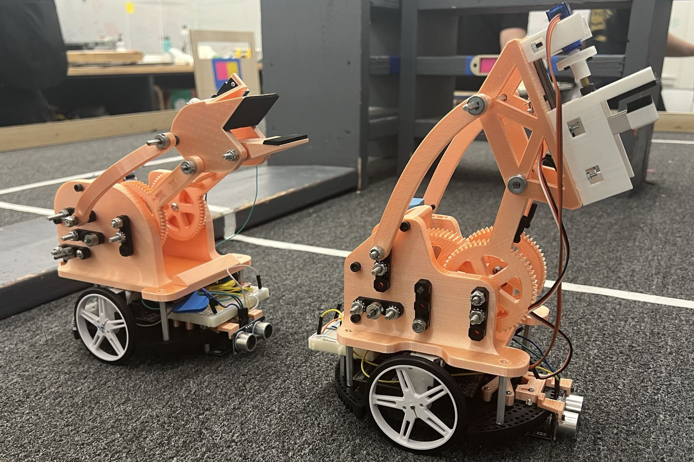 |
Autonomous Solar Panel Delivery Robot
WPI Course Project, 2021 |
Education |
|
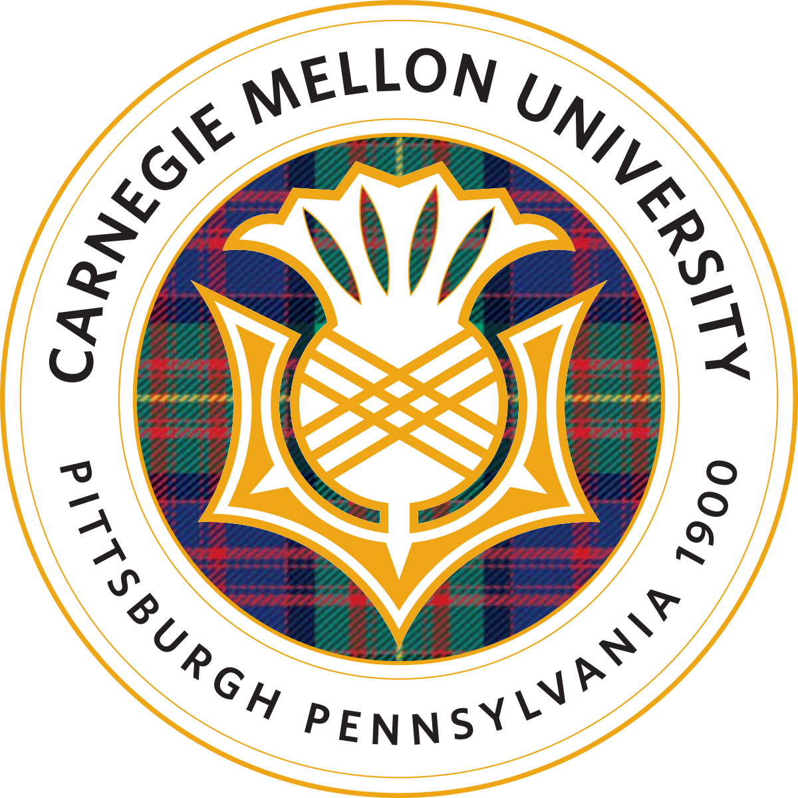 |
Carnegie Mellon University Master of Science in Robotic Systems Development (MRSD) GPA: 4.01/4.0 | August 2024 - May 2026 Coursework: Deep Reinforcement Learning | Deep Learning Systems |
|
|
Worcester Polytechnic Institute Bachelor of Science in Robotics Engineering Bachelor of Science in Computer Science GPA: 3.97/4.0 | August 2020 - May 2024 Coursework: Robot Dynamics | Optimal Control | Machine Learning | Robot Navigation |
|
|